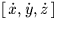

| DATE | D | TDB (formerly ET) as a Modified Julian Date (JD-2400000.5) |
|---|---|---|
| DEQX | D | Julian Epoch (e.g. 2000D0) of mean equator and equinox of the vectors returned. If DEQX <0, all vectors are referred to the mean equator and equinox (FK5) of date DATE. |
| DVB | D(3) | barycentric , AU s-1 |
|---|---|---|
| DPB | D(3) | barycentric |
| DVH | D(3) | heliocentric , AU s-1 |
| DPH | D(3) | heliocentric |
SLALIB --- Positional Astronomy Library